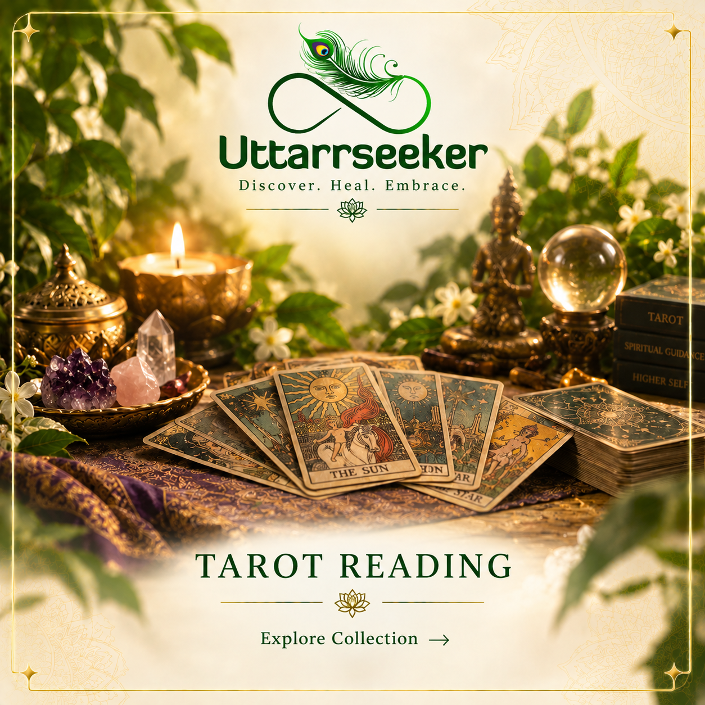
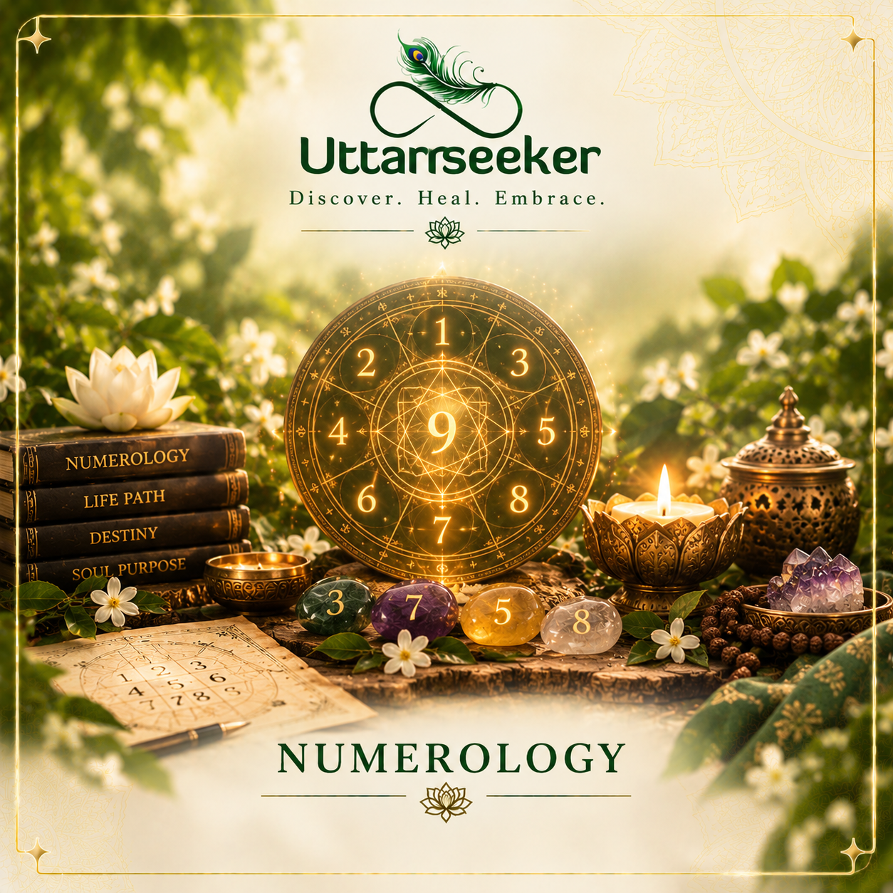
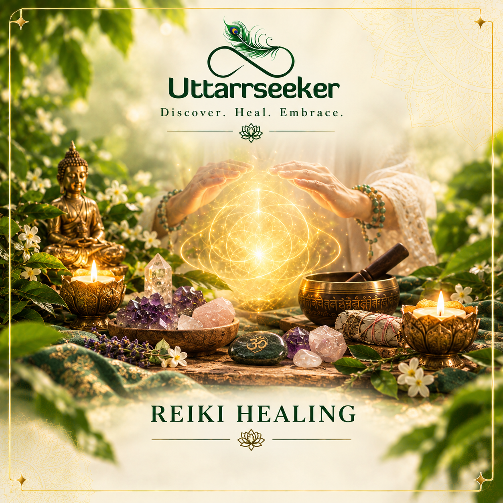
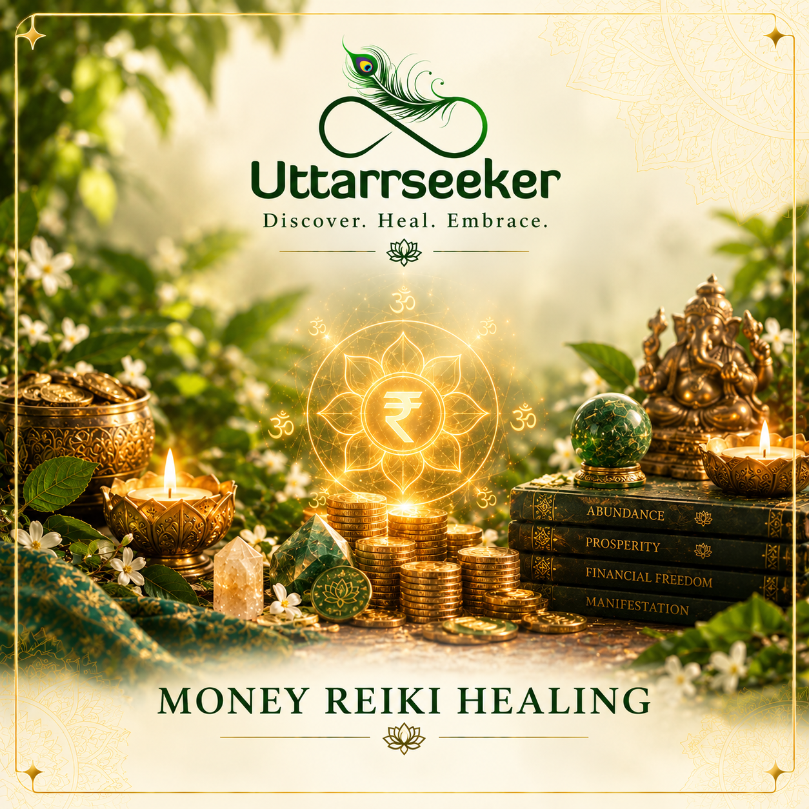

What We Offer
Our Services
Your path to clarity, healing, abundance, and harmony - through Tarot, Numerology, Reiki, Money Reiki & Vastu.

Service
Tarot Card Readings
Tarot card reading is a form of intuitive guidance that uses symbolic Tarot cards to explore questions about relationships, career, finances, personal growth and important life decisions. A Tarot reading offers a reflective perspective on your current situation, helping you understand patterns, possibilities and potential paths forward.
A typical Tarot reading session begins with a question or area of life you want to explore. The cards are then selected and interpreted according to their symbolism, position and relationship with one another. The reading can help you reflect on your current energy, challenges, opportunities and possible next steps.
What Can a Tarot Reading Help With?
Love & Relationships — gain perspective on relationship dynamics, emotions and connections.
Career & Work — explore career decisions, professional challenges and potential opportunities.
Finance & Abundance — reflect on financial decisions, goals and patterns around money.
Personal Growth — gain a deeper perspective on yourself, your choices and your current life path.
Life Decisions — use the reading as a tool for reflection when you're facing an important choice.
How Tarot Reading Works
Your Question → Card Spread → Intuitive Interpretation → Reflection & Guidance/p>

Service
Numerology
Numerology Consulting
Discover how your numbers influence your personality, strengths, challenges and life purpose. Receive practical insights that can help you make more aligned decisions in different areas of life.
Numerology Reports
A comprehensive personalized report that explores your core numbers, life path, destiny and personal traits. Ideal for those seeking deeper self-awareness and a roadmap for personal and professional growth.
Name Numerology
Your name carries a unique vibration that influences how you connect with opportunities and experiences. A numerologically aligned name can help enhance confidence, harmony and overall success.
Baby Name Numerology
Choose a name that is not only meaningful but also aligned with your child's energetic blueprint. A well-balanced name can support positive growth, opportunities and overall well-being.
Business Name Numerology
Build a strong foundation for your business with a name that resonates with growth and prosperity. This consultation helps identify names that align with your business goals and vision.
Mobile Numerology
Your mobile number carries a frequency that can impact communication, opportunities and daily interactions. Find out whether your number supports your goals or requires energetic alignment.

Service
Reiki Healing
Reiki is a complementary wellness practice that involves a practitioner gently placing their hands on or above the body, with the intention of supporting relaxation and a sense of balance.
A Reiki healing session is often used for relaxation, emotional well-being and self-reflection. Many people experience it as a calming practice that can help create a peaceful space to slow down and reconnect with themselves.
Reiki may be explored alongside areas such as stress management, mindfulness, emotional balance and personal well-being, depending on an individual's needs and beliefs.
At Uttarseeker, Reiki healing is offered as a gentle, supportive wellness experience designed to encourage relaxation, inner awareness and a greater sense of calm.

Service
Money Reiki Healing
Money Reiki is a spiritual and complementary wellness practice that combines Reiki principles with intention and reflection around money, abundance and financial well-being.
A Money Reiki healing session may focus on exploring emotional patterns, limiting beliefs and personal attitudes associated with money, success and abundance. It is often approached as a way to encourage a more positive and mindful relationship with finances.
The practice may help you reflect on areas such as abundance mindset, confidence, financial goals and personal growth, while creating space for relaxation and inner awareness.
At Uttarseeker, Money Reiki is offered as a reflective wellness experience to help you explore your relationship with abundance and approach your financial journey with greater clarity and intention.
Service
Akashic Records
Akashic Records are described in spiritual traditions as a metaphysical record containing information about a soul’s experiences, patterns and journey. An Akashic Records reading is intended to explore these themes through intuitive and spiritual guidance.
A session may focus on recurring life patterns, relationships, personal growth, emotional experiences and questions about your life path, offering a space for reflection and deeper self-understanding.
The practice is often used to explore past experiences, present challenges and possible paths forward, rather than as a guaranteed prediction of the future.
At Uttarseeker, Akashic Records readings provide a reflective spiritual experience to help you explore your inner journey, gain perspective and connect with your sense of purpose.
Service
Vastu Consulting
Vastu Shastra is a traditional Indian architectural practice that focuses on the relationship between a space, its layout, directions and natural elements. Vastu consulting applies these traditional principles to help assess the energy and arrangement of homes, offices and other spaces.
A Vastu consultation may consider factors such as entrance direction, room placement, orientation, natural light, ventilation and the arrangement of different areas within a property.
Vastu guidance can be explored for homes, workplaces, offices and new properties, with recommendations based on the specific layout and requirements of the space.
At Uttarseeker, Vastu consulting offers traditional guidance to help you create a more balanced, harmonious and thoughtfully arranged living or working environment.